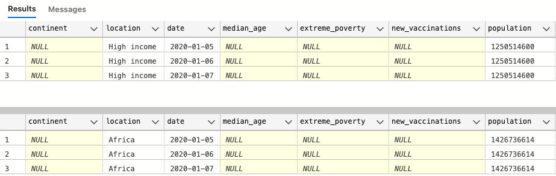

highlight important statistics using SQL and Tableau
The first step is to find some valuable and trustworthy data.
A good place to look for valuable data ist OurWordInData. I chose to use the current version of COVID-19 Dataset downloaded from here. The dataset has many columns (67), and after some exploration, I'm going to use 12 of them and must of them:
- continent
- location
- date
- population
- new_cases
- new_deaths
- new_vaccinations
- extreme_poverty: Share of the population living in extreme poverty
- male_smokers
- female_smokers
- population_density: measured in square kilometers
- human_development_index: score from 1 to 100
There are some rows in the dataset that do not pertain to a specific country; instead, they contain information about continents and income levels of people. We need to be aware of these rows.  My first step is to create a temporary table and put all the needed information for further calculations in it.
-- create temp table
CREATE TABLE #CountryInfos(
continent VARCHAR(50),
location VARCHAR(50),
date Date,
population FLOAT,
new_cases FLOAT,
new_deaths FLOAT,
new_vaccinations FLOAT,
extreme_poverty FLOAT,
male_smokers FLOAT,
female_smokers FLOAT,
population_density FLOAT,
human_development_index FLOAT,
);
With tst as (
select continent,location,date,population,new_cases,new_deaths,new_vaccinations,
extreme_poverty,male_smokers,female_smokers
,population_density,human_development_index
from Covid..CovidData
WHERE continent is not null and location not like('%income%')
)
INSERT into #CountryInfos(continent,location,date,population,new_cases,new_deaths,new_vaccinations,
extreme_poverty,male_smokers,female_smokers
,population_density,human_development_index)
select * from tst;Now we are good to go for calculations and create useful information for presentation in Excel or Tableau